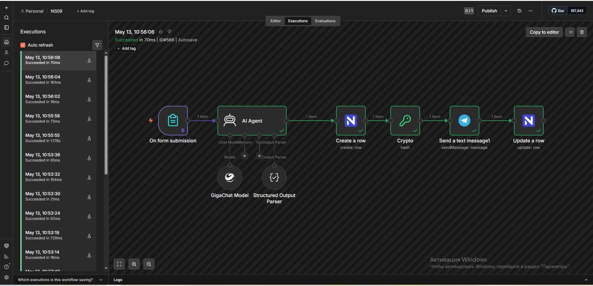

🎯 Контекст и бизнес-проблема
В B2B-сегменте и кастомной разработке путь заявки от клиента до оплаты часто проходит через 4–5 ручных шагов: менеджер читает запрос, оценивает бюджет, пишет КП, создаёт инвойс и копирует ссылку клиенту.
- ⏳ Долгий Time-to-Response — клиент ждёт часами и уходит к конкурентам
- 🧑💻 Рутина и человеческий фактор — копирование данных между почтой, CRM и бухгалтерией
- 📉 Потеря лидов — без мгновенной оценки бюджета «сложные» заявки зависают
- 🔀 Хаос в статусах — нет единой связки «CRM ⇄ эквайринг»
- 🔐 Риски биллинга — дублирующие вебхуки шлюза могут провести оплату дважды
✅ Цель автоматизации
Построить автономный пайплайн, который:
- Принимает заявку через форму с валидацией
- С помощью ИИ оценивает бюджет и формирует персональное КП
- Создаёт сделку в CRM и генерирует платёжную ссылку
- Уведомляет менеджера в Telegram
- Автоматически переводит сделку в
paidпо факту оплаты - Обеспечивает криптографическую проверку и идемпотентность уведомлений
⚙️ Архитектура решения
Инфраструктура: Self-hosted n8n + NocoDB, внешние API (GigaChat, Robokassa, Telegram Bot), шифрование подписей на лету, аудит-логи всех транзакций.

🔧 Детали реализации
📝 Приём заявки
n8n Form Trigger с валидацией: имя (required), телефон (маска +7), email (required), описание (required).
🤖 AI-обработка
LangChain-агент на GigaChat со структурным выводом:
гарантированный JSON {"price": number, "offer": string[]} вместо Markdown.
📊 CRM на NocoDB
Таблица «Заказы» с Kanban-view. Поля: контакты, запрос, цена (от AI), КП, ссылка на оплату, статус (new/paid).
💳 Платёжная ссылка
Подпись формируется вручную через ноду
Crypto (MD5) по формуле: MD5(MerchantLogin:OutSum:InvId:Password1).
Независимо от SDK, полный контроль.
🛡 Работа с ошибками и безопасность
- Валидация подписи: При POST от Robokassa n8n пересчитывает MD5 и сравнивает с
SignatureValue. При несовпадении — обработка прерывается (защита от поддельных вебхуков). - Идемпотентность по InvId: Проверка наличия записи с
processed_atв таблице уведомлений. Защищает от дублирующих ретраев шлюза. - Аудит-логи: Служебная таблица хранит: сырой payload,
signature_ok,execution_id,processed_at,error_message.
📊 Результат (оценочно)
💡 Ценность для бизнеса
- Рост конверсии: мгновенный ответ с персональным КП повышает LTV
- Экономия ФОТ: ИИ как пресейл-менеджер — обработка ×10 больше заявок без расширения штата
- Финансовая безопасность: MD5 + идемпотентность = защита от мошенничества и рассинхрона
- Управляемость: Kanban + аудит-логи = прозрачная воронка в реальном времени
🌍 Где ещё применимо
- E-commerce и кастомное производство (мебель, стройматериалы)
- Онлайн-образование и консалтинг — скоринг заявок + продажа
- B2B SaaS и digital-агентства — автоматический онбординг
- Автосервисы, клиники, строители — любая ниша с нефиксированной ценой
📦 Артефакты кейса
JSON-экспорт workflow, скриншоты Kanban-доски, примеры AI-ответов и документация по MD5-подписи доступны по запросу для верификации production-ready архитектуры.